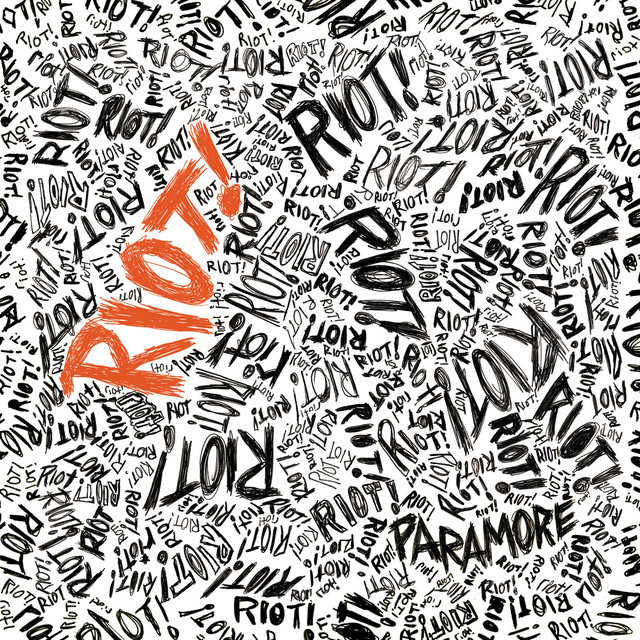
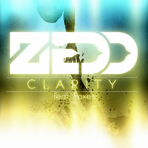
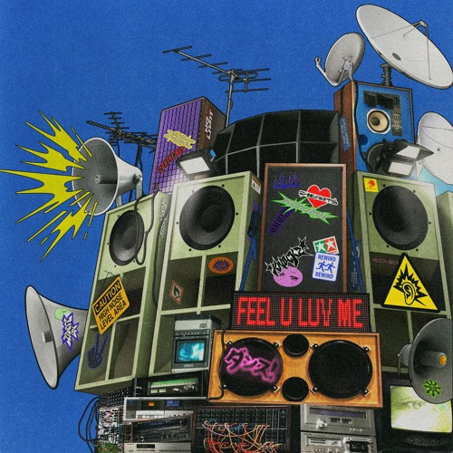
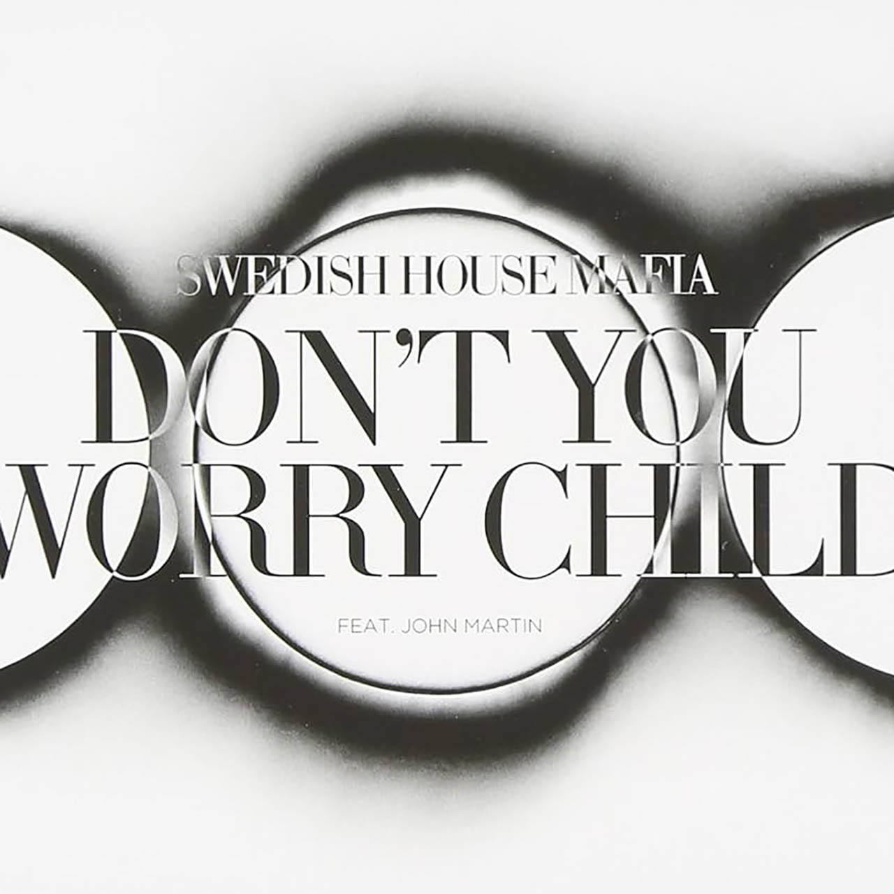
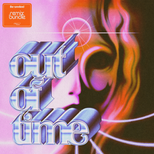
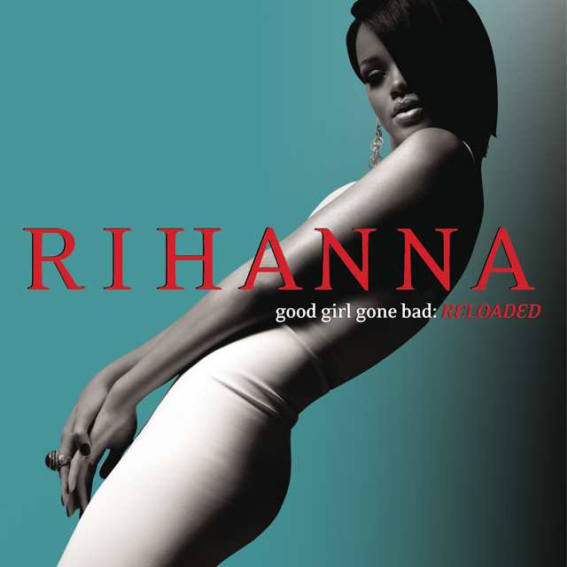
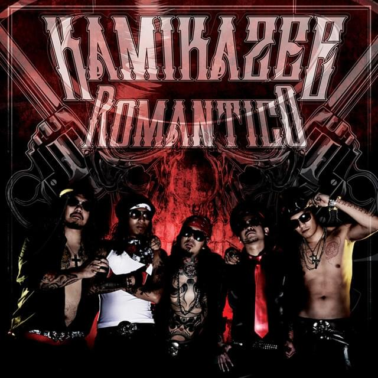
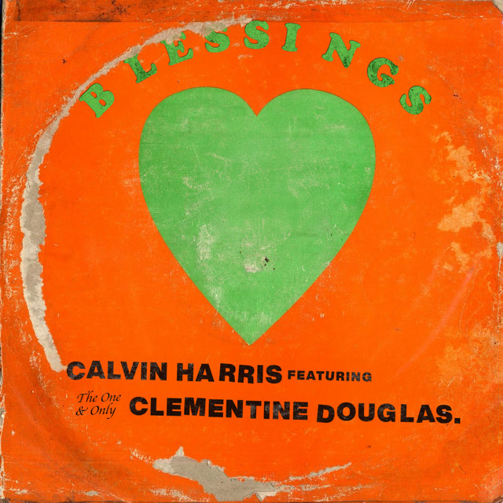
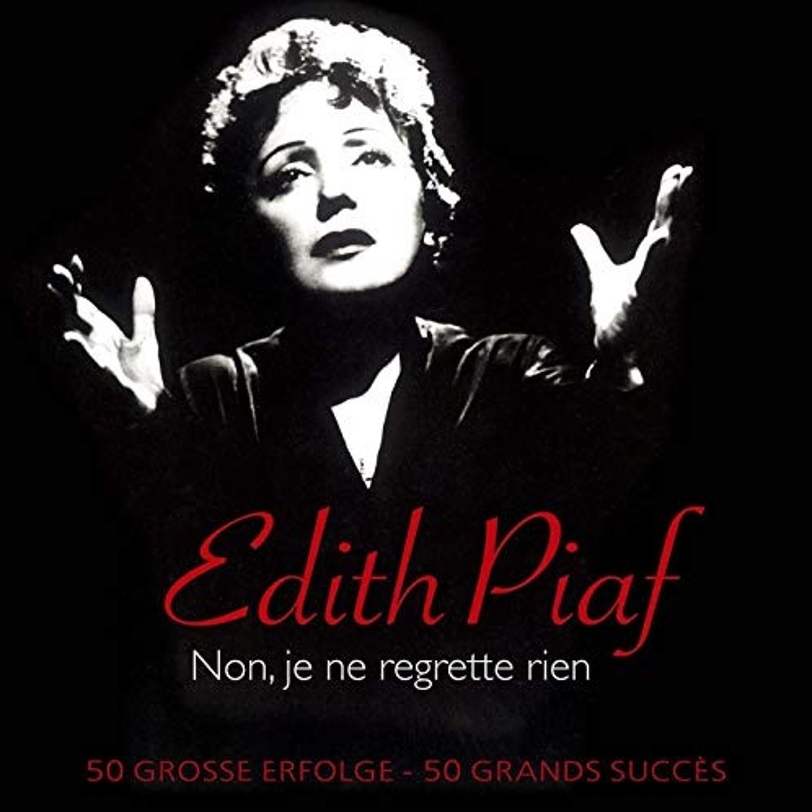

Top 1

Paramore - Misery Business
Artist - Paramore
Album - RIOT!
Released - June 4, 2007
Genre - Pop-Punk / Alternative Rock
Album - RIOT!
Released - June 4, 2007
Genre - Pop-Punk / Alternative Rock
Top 2

Zedd - Clarity
Artist - Zedd
Album - Clarity
Released - October 2, 2012
Genre - Progressive House / EDM
Album - Clarity
Released - October 2, 2012
Genre - Progressive House / EDM
Top 3

Knock2 - feel U luv Me
Artist - Knock2
Album - nolimit
Released - September 27, 2024
Genre - Bass House / EDM
Album - nolimit
Released - September 27, 2024
Genre - Bass House / EDM
Top 4

Swedish House Mafia - Don't You Worry Child
Artist - Swedish House Mafia
Album - Until Now
Released - September 14, 2012
Genre - Progressive House / EDM
Album - Until Now
Released - September 14, 2012
Genre - Progressive House / EDM
Top 5

The Weeknd - Out Of Time
Artist - The Weeknd
Album - Dawn FM
Released - January 7, 2022
Genre - R&B / Synth-Pop
Album - Dawn FM
Released - January 7, 2022
Genre - R&B / Synth-Pop
Top 6

Ben&Ben - Lifetime (Reimagined)
Artist - Ben&Ben
Album - Autumn (Reimagined) EP
Released - March 31, 2026
Genre - Cinematic Folk-Pop / OPM Ballad
Album - Autumn (Reimagined) EP
Released - March 31, 2026
Genre - Cinematic Folk-Pop / OPM Ballad
Top 7

Rihanna - Disturbia
Artist - Rihanna
Album - Good Girl Gone Bad: Reloaded
Released - June 17, 2008
Genre - Dance-Pop / Synth-Pop
Album - Good Girl Gone Bad: Reloaded
Released - June 17, 2008
Genre - Dance-Pop / Synth-Pop
Top 8

Kamikazee - Tagpuan
Artist - Kamikazee
Album - Long Time No See
Released - February 3, 2012
Genre - OPM Rock
Album - Long Time No See
Released - February 3, 2012
Genre - OPM Rock
Top 9

Calvin Harris - Blessings
Artist - Calvin Harris
Album - Blessings (Single)
Released - May 9, 2025
Genre - House / Dance
Album - Blessings (Single)
Released - May 9, 2025
Genre - House / Dance
Top 10

Édith Piaf - Non, je ne regrette rien
Artist - Édith Piaf
Album - Non, je ne regrette rien (Single)
Released - November 10, 1960
Genre - Chanson / Traditional Pop
Album - Non, je ne regrette rien (Single)
Released - November 10, 1960
Genre - Chanson / Traditional Pop